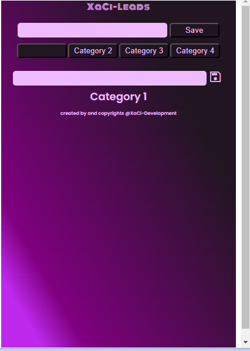
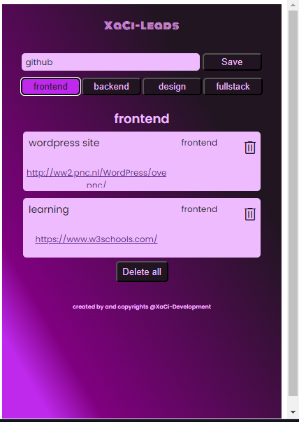
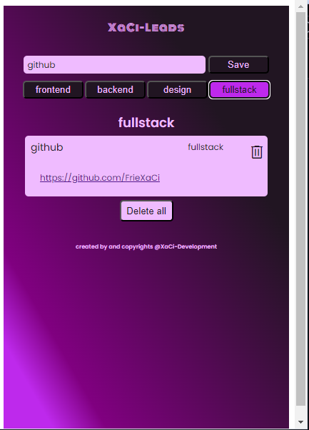

Dit is een handige extensie waarmee je gemakkelijk URL's kunt
opslaan in verschillende categorieën. Als een vereenvoudigde versie
van bladwijzers, je kan je eigen categorieën definiëren en per
zoekopdracht 4 verschillende categorieën maken. Perfect voor
recruiters, onderzoekers en iedereen die online bronnen wil
organiseren en beheren. Probeer het nu en ontdek een georganiseerde
en efficiënte manier om je online zoekopdrachten bij te houden. Deze
extensie is gemaakt met javascript, html en sass.
HTML
Sass
Javascript
Wil je meer informatie? Klik op Website om een live demonstratie van
het project te bekijken, of gebruik de GitHub knop om toegang te
krijgen tot de broncode.



Website gemaakt in wordpress. Hiervoor is gebruik gemaakt van
elementor om de pagina vanaf "scratch"op te bouwen. Deze pagina is
in samenspraak met de eigenaar gemaakt en hierbij is met het design
rekening gehouden met de eindgebruikers.
WordPress
Wil je meer informatie? Klik op Website om een live demonstratie van
het project te bekijken.